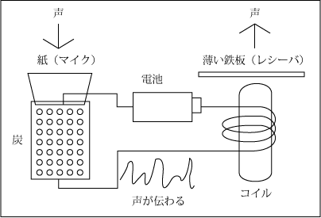

電話の世界観です。機械いじりが子供のごろから好きだった父親の話を参考にしています。
まず、レシーバ（受話器）から。
電流を流した導線を、釘に巻き付けると（コイル）、磁力（電磁力）が発生します。
この磁力は、電流が大きければ大きいほど、強い磁力を発生させます。
これに目を付けて、電磁力を発生させる「コイル」をまずつけて、そのすぐ近くに薄くて平たい「鉄の板」を近づけました。
これにより、電流の強さによって、薄い鉄の板を振動させ、音の振動を生み出すことが出来ました。
これが、電話の受話器です。
レシーバが出来たことから、今度はマイクロフォン（送話器）を考えました。
導線に「炭の粒・粉（炭素）」をたくさん居れたカップを繋ぐと、強く炭を力で押し込むほど、抵抗が少なくなり、たくさんの電流を発生させます。
このことから、炭の粒が入ったカップに、声の振動を伝えるための「紙」のようなものを付けました。
これにより、声の振動によって、電流の強さを変えられるようになりました。紙と炭を通じて電流の大きさが変わり、声が伝わります。
これが、電話の送話器です。
レシーバとマイクロフォン（マイク）を繋げて使うことで、声がマイクから電流になり、電流がレシーバから声になることが出来ます。
これは電気で繋がっているため、電話を作ることが出来ました。

家に固定されている固定電話では、それぞれの位置情報を住所（アドレス）とともに持っている。
固定電話で電話をすると、電話回線を通じて、まず電話局に繋がり、電話局で位置情報を割り出し、電話先へと繋がる。位置情報を割り出すのを「交換」と呼ぶ。交換は自動化されて「交換機」が行うようになった。
だが、携帯電話の場合はどうするか。携帯電話では、電話を持っている人の位置情報がリアルタイムに変わるため、固定電話のように住所を位置情報にすることができない。
第一の方式である「セルラー方式」では、場所を細胞（セル）のような小さな区域に分けて、区域ごとに「基地局」を置く。そして、携帯電話が常に無線で最も近い基地局と通信をしている。電話をすると基地局を通じて、電話元と電話先の電話が繋がる。よって、携帯電話では、電話をしていない間でも、常に自分の位置情報を一番近い基地局と通信して確認している。
第二の方式は、GPSである。人工衛星を使った位置情報の分析は、近年とても正確になっており、GPSを使うことでピンポイントで位置情報を割り出すことができる。最近のスマホなどでは、GPSが使われている。
昔の固定電話は、最初に電話が普及し始めた時代、家の中で決まって玄関のような場所に設置されていました。
なぜ玄関に固定電話が設置されていたのか、その理由は、すべての家に電話があるわけではなかったからです。
電話が各家庭にひとつなかったため、電話のない家の住人は、学校などの書類に電話番号を書く際に、近くの電話のある家庭の電話番号を、「呼び出し用の電話番号」として記載し、もしそこに電話があった場合は、その家庭から自分の家にわざわざ呼び出してもらって電話をしていました。
それが、ある程度時代が進歩して、それぞれの家庭に固定電話が設置されるようになると、玄関ではなく居間のような場所に電話が設置されるようになりました。
各家庭にひとつなかったのは、電話だけではありません。それはテレビです。テレビも、各家庭にひとつあるとは限らず、スポーツ中継のようななんらかの重要なイベントがあった時には、みんなでテレビのある家庭に赴いて、テレビ観戦をみんなでしていました。
2023.04.22
電話に出る際に、必ずしもすべての電話に出なくて構いません。
詐欺だけではなく、通信販売の勧誘のような電話は、ひっきりなしにいつでもかかってきます。
そのような電話に出ることは無意味です。
たとえば、怪しい電話番号を記録して、その番号には出ないようにするとか、電話番号が非通知でかかってきた電話には出ない、などといった対策が有効です。
詐欺に関して言うと、詐欺師は自らの犯行が記録に残ることを嫌います。なので、録音機能がもしある場合にはそれをオンにするといった対策ができます。
詐欺ではなくても、自らの都合の悪い時間帯に電話がかかってくることもあります。そのような時にはもっと別の時間を指定してかけ直してもらいますが、それでも、運転中などに電話がかかってくることはよくあります。
最近では、固定電話をそもそも持たない人（スマホしか使わない人）が増えています。僕個人の意見として、そもそも電話という通信インフラ自体を再考すべきだと思います。現代社会において、電話のような通信システムは無くすべきなのではないでしょうか。
後日注記：怪しい番号からかかってきた電話には出ないこと。特殊詐欺は一向に減る気配がなく、いつ騙されるか分かりません。家族や知人の電話だけに出るようにし、よく分からない電話番号は最初から出ないようにしましょう。電話でのお金の話は信じないこと。相手が信用できそうな話し方をしてきても信じないこと。そして、何かおかしいことがあればすぐに家族などの周りの人間に相談しましょう。
警察も参照のこと。
2024.05.13
2025.11.25編集
スマホなど最近の電話機は、電話帳に連絡先の電話番号と名前をあらかじめ登録しておくことで、電話をかける際に一覧に表示されるだけでなく、電話がかかってきた時や、電話をかけた・かかってきた相手の履歴である着信の表示の時に、電話番号ではなく名前が表示されるようになります。
詐欺などと区別するために、友人知人や職場など、よくかかってくる電話番号は、あらかじめ電話帳に連絡先を追加しておきましょう。
連絡先を追加するためには、電話番号と名前を入力することもできますが、相手から一度自分にかけてもらって、着信履歴から名前を追加して登録する方法が、間違いがなく、楽です。
2025.12.11
FAXとは、電話番号を指定して、画像や文書などを送信する装置のこと。送信のために電話回線を使用する。
2024.11.20
エジソンについては科学者・科学史も参照のこと。